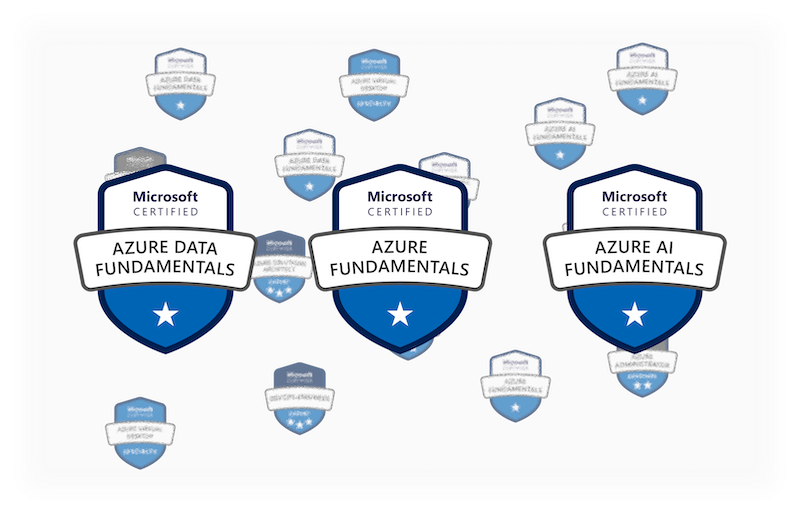

Resources
At a Glance
At a Glance
Python
TensorFlow
Microsoft Certificates
Python resources
Scikit-Learn
A simple but efficient machine learning library for python
⚙️ March 18, 2022
scikit-learn is an open-source machine learning library. It's build on top of NumPy (a numerical computing library) and Matplotlib (a data visualization library). The topic in this notebook will cover a typical work process of building a machine learning model, starting with preparing the data and finishing with the evaluation of the output results. The dataset used as a sample will be a hospital's heart disease record with 303 patient records.
Matplotlib
A comprehensive library for creating static, animated, and interactive visualizations in Python
⚙️ March 18, 2022

Matplotlib is a python library for data visualization and graphical plotting. It is widely used to visualize, analyze,
and understand the insight of the data. There are a lot of data visualization tools available in the market that can be
used, such as, Tableau, R, openCV, etc. When working with python, Matplotlib might be the most easiest and
common data visualization tool that come to mind.
NumPy
A small but effective tool for manipulating data
⚙️ March 10, 2022
Numpy is a python library that supports multi-dimensional arrays and a large collection of mathematical functions. It is a super powerful library that is compatible with all different types of other libraries such as machine learning libraries.
Pandas
Plot financial market data like a pro
⚙️ March 07, 2022
Pandas is an open-source package used for data manipulation and data analysis. It is powerful for manipulating data structures in tables or times series. Pandas is built on top of Numpy, another python package, that is highly efficient in mathematical operations.
In this notebook we will follow the CRUD operations - Create, Read, Update, and Delete - to summarize all the most basic functionalities of Pandas.
The data used in this notebook is the stock price of Apple Inc. downloaded from Yahoo Finance.
mplfinance
Plot financial market data like a pro
⚙️ March 03, 2022
I have decided to make a quick summary after finishing one of my projects Getting Live Financial Data. mplfinance is a powerful but easy-to-use library. It doesn't require much time to understand and can make professional financial charts in no time. This notebook should have all of the most common functionalities of mplfinance.
JSON
Lightweight, text-based, language-independent data interchange format
⚙️ May 01, 2022

JavaScript Object Notation or JSON is a lightweight, text-based, language-independent data interchange format. JSON defines a small set of formatting rules for the portable representation of structured data. Since it is so lightweight, it becomes one of the most popular data files for storing and transferring data.
TensorFlow Resources
TensorFlow Certification Exam
A story of how I passed the TensorFlow Certification exam
⚙️ March 03, 2022

This is the journey of how I passed the TensorFlow certification exam from no knowledge to become confident to take the exam. It wasn't too easy nor too difficult for someone who isn't working with machine learning on a day-to-day basis.
Build a TensorFlow Model
Build a TensorFlow Model in just a few of Steps
⚙️ March 05, 2022
TensorFlow has given machine learning practitioners an incredible environment to easily create and run machine learning models. I have taken this opportunity to prepare a short summary of how I would pursue to create a model of my own with TensorFlow. The example will tackle an image classification problem using CNN with the Fashion MNIST dataset from TensorFlow.
List of TensorFlow Models
A complete list of the TensorFlow models in my disposal
⚙️ Updated: March 21, 2022
Here are the models that I have learned during the study for the TensorFlow Certification Exam. For more models go to this page.
Neural Network Regression
- Neural Network Regression with Custom Housing Price Data
- Neural Network Regression with Boston Housing Price Dataset
- Neural Network Regression with Titanic dataset
Image Classification
- Basic Dense Model Multi-Class Classification with Fashion MNIST dataset
- Binary-Class Image Classification with Dogs and Cats dataset
- Multi-Class Image Classification with Fashion MNIST dataset
Natural Language Processing
- Binary-Class Text Classification with IMDB dataset
- Binary-Class Natural Language Processing with Disaster Tweets dataset
- Multi-Class Natural Language Processing with PedMed 200k dataset
- Multi-Class Natural Language Processing Sentiment Analysis on Movie Reviews
Time Series
Miscellaneous
Microsoft Azure
Microsoft's Cloud Environment Certifications
⚙️ April 26, 2022

The demand of cloud-based solution has increased rapidly over the decade. Microsoft Azure is one of the most popular cloud platforms in the market. Microsoft has a huge library of resources, learning material, etc., that's overwhelming at first.